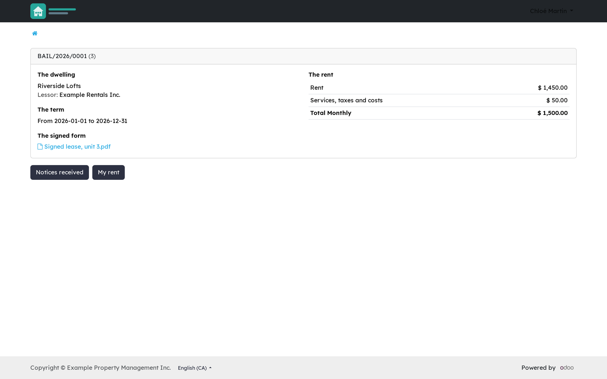
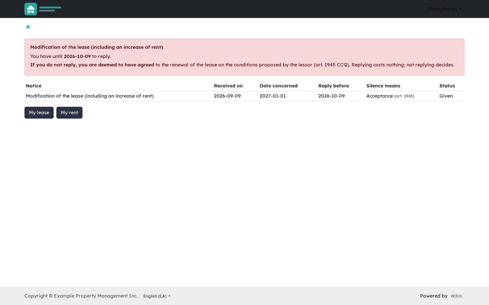
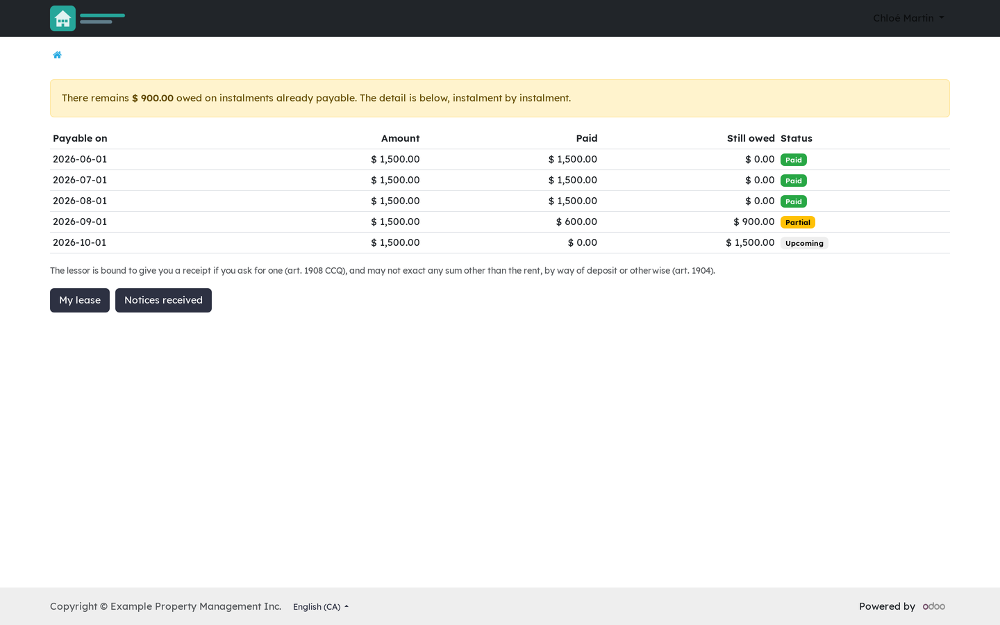
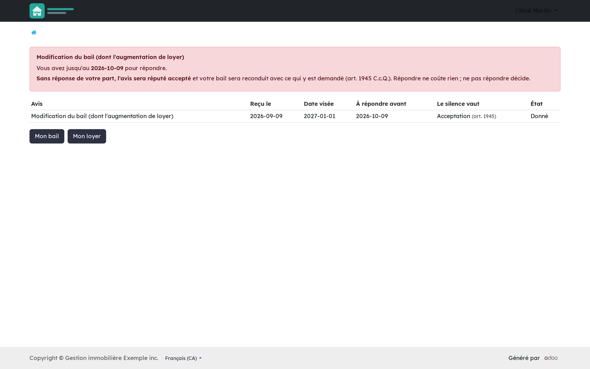
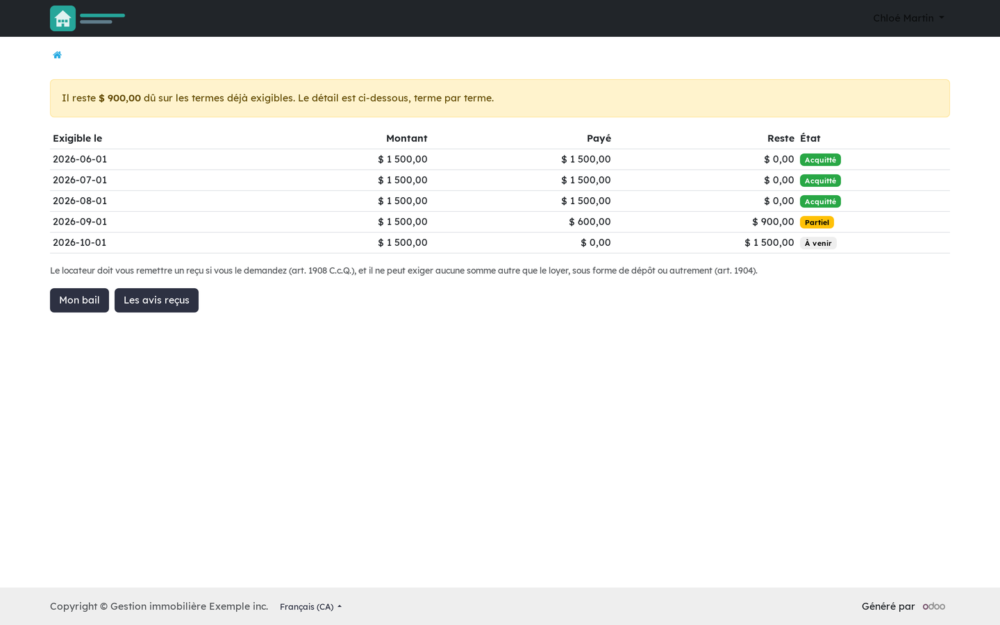

Version française plus bas.
Three read-only pages on the standard Odoo portal, so that a lessee does not have to phone to know what their lease says or when an answer is due. Who sees a lease is read from the lease itself, never from the fraction: co-lessees all see it, a lease with no fraction (a room, land for a mobile home) is not lost, and a person recorded on the fraction without being a party to the lease sees nothing.

The lessee's portal: their lease, their notices and their rent.

A notice awaiting a reply: the deadline, and what silence will produce.

What the lessee has paid, instalment by instalment.
Requires Rental: notices (bf_rental_notice), Rental: rent and arrears (bf_rental_rent) and the Odoo portal. It does not depend on the co-ownership occupant portal: a lessor has no syndicate, and the two portals can live side by side.
Business Source License 1.1. You may use this module in production for your own internal business operations, which include administering immovables that you own or that you are constituted to administer, and letting a person acting on your behalf use your instance for that purpose. Administering immovables for the account of others, or providing the module to third parties as a product or service, whether hosted, managed or resold, requires a separate written agreement with the licensor. Each version converts to LGPL-3.0-or-later on the Change Date stated in the LICENSE file, which sets out the exact terms.
Trois pages en lecture seule sur le portail standard d'Odoo, pour qu'un locataire n'ait pas à téléphoner pour savoir ce que dit son bail ou quand une réponse est due. Qui voit un bail se lit au bail lui-même, jamais à la fraction : les colocataires le voient tous, un bail sans fraction (une chambre, un terrain de maison mobile) n'est pas perdu, et une personne inscrite à la fraction sans être partie au bail ne voit rien.
Le portail du locataire : son bail, ses avis et son loyer.

Un avis en attente de réponse : l'échéance, et ce que produira le silence.

Ce que le locataire a payé, terme par terme.
Exige Locatif : les avis (bf_rental_notice), Locatif : loyer et arrérages (bf_rental_rent) et le portail d'Odoo. Il ne dépend pas du portail de l'occupant de la copropriété : un locateur n'a pas de syndicat, et les deux portails cohabitent.
Business Source License 1.1. Vous pouvez utiliser ce module en production pour vos propres activités internes, ce qui comprend l'administration des immeubles dont vous êtes propriétaire ou que vous êtes constitué pour administrer, et l'usage de votre instance à cette fin par une personne qui agit pour votre compte. Administrer des immeubles pour le compte d'autrui, ou fournir le module à des tiers comme produit ou service, hébergé, géré ou revendu, exige une entente écrite distincte avec le concédant. Chaque version passe sous LGPL-3.0 ou ultérieure à la date de changement inscrite au fichier LICENSE, qui fait foi.